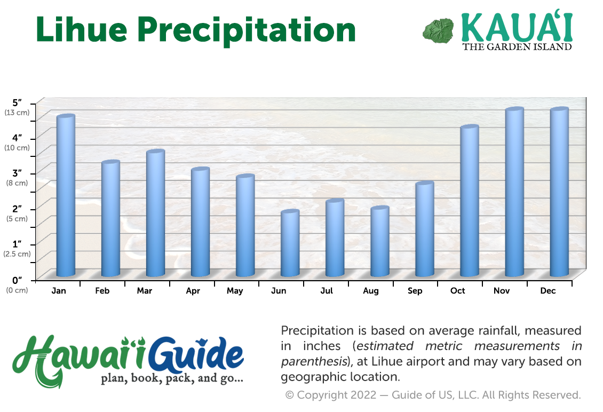
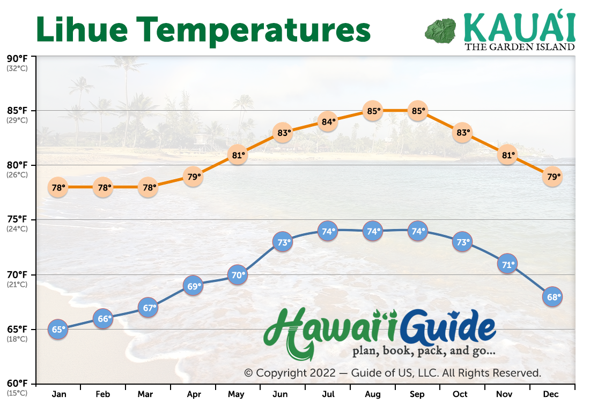

Best Time to Visit Kauai
Kauai is warm year round, but your experience can feel totally different depending on the month, where you stay, and what the ocean is doing. Here’s the simple breakdown so you can plan smarter.
Seasons in Hawaii
Hawaii really only has two: summer (kau) and winter (hooilo).
Summer (kau)
May to October
Generally drier and calmer in more areas around the island.
Winter (hooilo)
November to April
More rain overall, and bigger north swells can make some beaches rough.
Best Overall Time to Visit
The best combo of lower prices, great weather, and smaller crowds usually happens during the shoulder seasons: September to mid November and March to May.
One thing to keep in mind: Kauai is lush because it gets more rain than the other islands, and where you stay matters.
North Shore vs South Shore
If you compare average rainfall and temperatures by month in Hanalei (North Shore) versus Poipu (South Shore), you’ll notice a consistent pattern: Hanalei gets more rain all year and is usually a bit cooler.
Average Rainfall on Kauai (2024)
Average High Temps on Kauai
Quick planning tip
Visiting outside of summer? Staying on the North Shore usually means more rain and rougher ocean conditions. If you want your best chance at sunny skies and calmer water in those months, consider staying on the South Shore.
Ocean Temperatures and Swim Conditions
Good news: the ocean temperature stays between 75 and 80 degrees year round. That means swimming is comfortable in January and in June.
Summer ocean conditions
You can usually find calm water in many places around the island. The main exceptions are storms (or remnants of storms) and occasional south swells.
Winter ocean conditions
North swells can bring choppy water and bigger waves to the north and east sides of the island, while Poipu and the South Shore tend to stay a bit calmer.
If you want a deeper look at typical swell seasons and where they hit, the Hawaii Department of Health has a helpful overview.
Wrap Up
- Best overall: September to mid November, and March to May
- Favorite month: September
- Busy season option: Late May and June
- Rain factor: Hanalei (North Shore) is wetter than Poipu (South Shore)
- Winter tip: Consider South Shore for calmer water and more sun